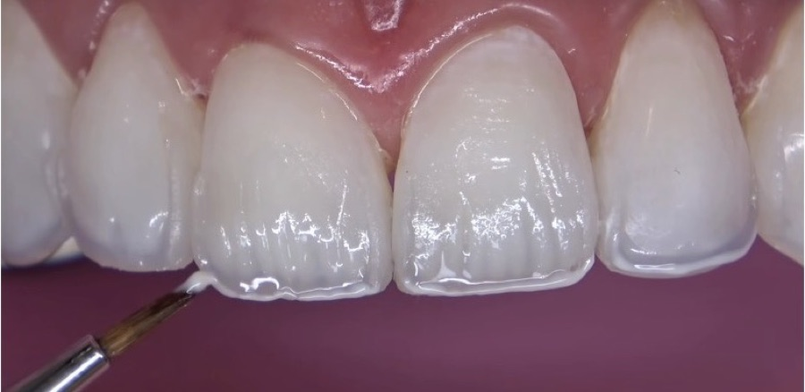

1978–1983
Licenciado en Ciencias Odontológicas
Universidad de Chile. Tesis: «Análisis Discriminante de los Quistes Maxilares».
Cirujano Dentista · Profesor Titular U. de los Andes
Especialista en Rehabilitación Oral, Prótesis y Oclusión
Av. Las Condes 10373 · Las Condes, Santiago

Sobre mí
Cirujano Dentista de la Universidad de Chile, especialista en Rehabilitación Oral con mención en Prótesis y Oclusión, y Profesor Titular de la Universidad de los Andes. Más de tres décadas dedicadas a la práctica clínica, la docencia universitaria y la investigación científica en el área de la rehabilitación oral.
Su trabajo integra el diagnóstico de la oclusión dentaria, la rehabilitación protésica y la estética, con un enfoque basado en evidencia y orientado al paciente.
Servicios
Recuperación integral de la función masticatoria y la estética en pacientes desdentados o con desgaste.
Coronas y puentes para restituir piezas dentarias de forma duradera y natural.
Prótesis totales y parciales, diseñadas para adaptarse con comodidad y estabilidad.
Diagnóstico y tratamiento de los trastornos de la oclusión y de la articulación temporomandibular.
Tratamientos orientados a mejorar la armonía y apariencia de la sonrisa.
Acompañamiento y rehabilitación protésica orofacial en pacientes oncológicos.
Formación
Universidad de Chile. Tesis: «Análisis Discriminante de los Quistes Maxilares».
Con mención en Prótesis y Oclusión. Universidad de Chile.
Universidad de Chile. Tesis: «Efecto de la Energía Superficial Libre en la Regeneración Epitelial de Encía de Rata, sobre Titanio 99,9% Puro».
Université de Sherbrooke, Canadá.
Universidad de los Andes.
Universidad Diego Portales. Tesis: «Competencias Teórico Prácticas en Materias de Oclusión Dentaria, en Alumnos de IV y V Año de la Carrera de Odontología».
Universidad de los Andes (288 horas).
Universidad de los Andes. Tesis: «Educar en relación con las virtudes conducentes al desarrollo de buenos hábitos y habilidades clínicas de los alumnos de Odontología».
Dentsply Sirona Academy, Bensheim, Alemania.
Oficina de Educación en Ciencias de la Salud, Universidad Mayor.
Sociedad de Prótesis y Rehabilitación Oral de Chile.
São Paulo, Brasil. · Training for Users InLab 19, Dentsply Sirona, Bensheim, Alemania.
Universidad de los Andes.
SiCat Function (2017) y SiCat Air (2018), Dentsply Sirona, Alemania. Entrenador clínico VITA Zahnfabrik (2019).
Universidad de los Andes.
Preparación de tesinas y monografías. Universidad de los Andes.
Miembro activo desde 1990. Director de la Sociedad desde 2022.
Socio fundador.
Miembro y secretario de la sección Chile.
Asesor de la Revista Chilena de Ortodoncia.
Investigación
Desarrollo de investigación aplicada patentable para la Universidad de los Andes (I+D+i).
Desarrollo de prototipo (15IPPID-45828).
Guzmán-Venegas RA, Biotti Picand JL, de la Rosa FJB. PLoS ONE 10(2): e0116923.
Guzmán-Venegas RA, Palma FH, Biotti JL, Berral de la Rosa FJ. Archives of Oral Biology 90: 130–137.
Casagrande Urdalleta DP, Recabarren Olmedo R, Cacciuttolo Fábrega FR, Biotti Picand JL. J Prosthet Dent 128: 604.e1–e5.
Rev. Clínica de Periodoncia, Implantología y Rehabilitación Oral 7(1): 17–20.
Revisión narrativa. Rev. Clínica de Periodoncia, Implantología y Rehabilitación Oral 7(1): 37–42.
2006 · Editorial AMOLCA, Venezuela.
2ª edición · Editorial AMOLCA, Venezuela.
2015 · Editorial Académica Española.
Galería


Ubicación
DirecciónAv. Las Condes 10373, Of. 46, Las Condes, Santiago
Ver en Google MapsContacto
Teléfono+56 9 6307 548
Correojbiotti@gmail.com
DirecciónAv. Las Condes 10373, Of. 46, Las Condes, Santiago
Horario de atención y confirmación de citas por teléfono o correo electrónico.